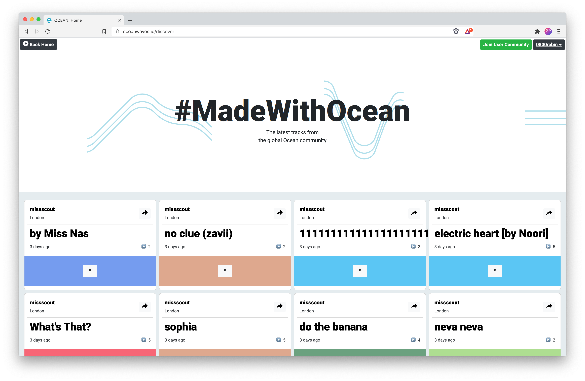

Ocean is a simple & fun way to make music in your browser. Collaborate in real time with friends & share your creations with the world. oceanwaves.io
UPDATE: 2020 Lockdown
Throughout the 2020 lockdown Ocean has grown a global base of 1000+ members & has facilitated world wide jam sessions from all corners of the earth. During a time where friends and normal life feel distant, seeing people expressing themselves & being 'along together' using a tool i've created has been incredibly rewarding.
Project Overview 🗺
My MSci research at Goldsmiths explored technical & design approaches to remote collaborative music making. I created a series of prototypes and workshops & found that roles naturally emerge when people jam together remotely and people have more fun when creating together.
Ocean has been iterated over the last few years since graduating as a beloved side project. I collaborate with two friends (who work in design & music) to design new features and market the platform.
The problem, the user, the magic 👩🚀
By speaking to beginners & experienced DAW users, we found that the infinite options & steep learning curve of DAWs means starting out is off-putting & even experienced producers can get 'stuck in the loop'. Meaning millions of musical ideas stay marooned in minds & hard-drives around the world, which is quite sad when you think about it.
We leverage the magic of the 'modern web platform' to create a fun, engaging experience which anyone can access, on any device or OS. The Web Audio API provide a solid base to explore really cool Audio projects on the web & tone.js provides some useful abstractions which make life quicker. These tools have sparked a new lease of creative life on the web creates a perfect storm for projects like Ocean.
The aim of Ocean is to build an accessible simple way to make music & break down the barriers associated with electronic music production.
Design 🕹
Fun, Fast & Simple are Ocean's core design principles. We focus on emoji & minimal text to allow Ocean to be used by as many people as possible. Complex digital music concepts are boiled down to simple and fun controls, for instance loops can be stretched across 1 / 2 / 4 / 8 bars in one click.
The main session view is built for collaboration, focusing on the main sequencer. Friends are added to the session simply by sharing the project URL and all changes to the session are synced and saved in real time. When working live, users tend to jam and make explore a lot of ideas in a short amount of time.

Session view
Our ever-growing Creative Commons sound library gives people the building blocks they need to start making music.
After building a few beats, users can then arrange them into a full track and post it to their profile to share it with friends. Our focus on speed lets you hit the site, make some music & share it all in one place, super fast.
Discover view
What's next? 🚀
We're now prototyping a new set of social and musical features for Ocean with our most engaged early users & launching a series of collaborations with a range of other brilliant music groups/charities/projects.
Stay tuned for more updates 🤖
Coverage
Ocean Beta 400+ upvotes on ProductHunt
Ocean: Make music together in your browser - TheSampler.Org
Explorations in Web Audio - An e-talk I gave for Music Hackspace London in May 2020